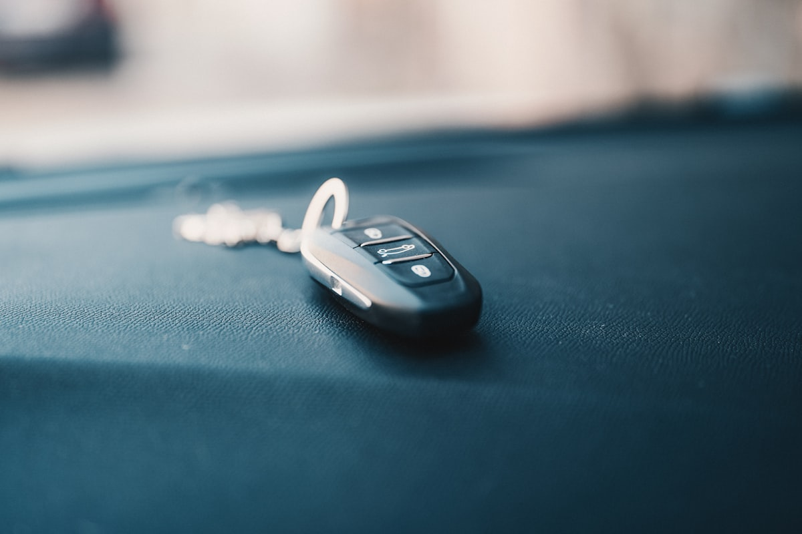

Копія домофонного чіпа в Ужгороді — від 100 грн за 2 хвилини

Робимо дублікати домофонних чіпів для будь-якого під'їзду в Ужгороді — як старих металевих «таблеток» Touch Memory, так і сучасних безконтактних RFID-чіпів. Маємо обладнання для копіювання чіпів частот 125 кГц (EM-Marin) і 13.56 МГц (Mifare), у тому числі захищених. Робимо при вас за 1-5 хвилин.
Потрібен дублікат чіпа просто зараз?
Принесіть оригінал — зробимо за 2 хвилини, ціна від 100 грн
Які домофонні чіпи ми копіюємо
- Touch Memory (DS1990A, "таблетка") — кругла металева таблетка, прикладається до металевої контактної площадки. Найпоширеніший тип у старих будинках Ужгорода.
- RFID 125 кГц (EM-Marin, EM4100, EM4102, T5577) — пластиковий брелок або карта, прикладається до зчитувача без контакту. Стандарт для більшості домофонів 2010-2020 років.
- Mifare 13.56 МГц (Mifare Classic 1K/4K, Mifare Plus, Mifare DESFire) — сучасний захищений RFID-чіп. Зустрічається у новобудовах і офісних центрах.
- HID, Indala, Sokymat, Cotag — рідкісні професійні стандарти (на промислових об'єктах). Копіюємо більшість.
- Захищені Mifare (із шифруванням Crypto-1) — підбираємо ключі та клонуємо.
Ціни на копіювання домофонних чіпів
| Тип чіпа | Ціна | Час |
|---|---|---|
| Touch Memory (DS1990A) | від 100 грн | 1 хв |
| RFID 125 кГц EM-Marin | від 100 грн | 1–2 хв |
| Mifare Classic 1K/4K | від 150 грн | 2–5 хв |
| Захищений Mifare (Crypto-1) | від 200 грн | 5–15 хв |
| Mifare Plus / DESFire | від 250 грн | 10–20 хв |
| Універсальний UID-брелок (для шлагбаумів, паркінгів) | від 150 грн | 3 хв |
* Якщо чіп не копіюється — підбираємо робочий аналог або повертаємо гроші.
Як ми копіюємо чіпи
- Приносите оригінальний чіп / таблетку / брелок до майстерні
- Майстер визначає тип і частоту через сканер
- Зчитуємо UID або повний дамп пам'яті оригіналу
- Записуємо на новий пустий чіп або брелок
- Перевіряємо роботу на тестовому зчитувачі (за бажанням — у вашому під'їзді)
Які заготовки в нас є
- Металеві "таблетки" RW1990 (для копії DS1990A)
- RFID-брелоки T5577 (універсальні для EM-Marin)
- Mifare Zero / OTP UID-changeable (для копіювання Mifare Classic)
- Брелоки та картки в різних кольорах
- Кільця, наклейки, нестандартні форм-фактори
Часті запитання
Як зрозуміти, який тип чіпа в мене?
Принесіть до нас — визначимо за 30 секунд. Загальне правило: якщо це металева кругла «таблетка», прикладається до контакту — це Touch Memory. Якщо пластиковий брелок або картка, прикладається без дотику — це RFID (125 кГц або 13.56 МГц).
Чи буде копія працювати так само як оригінал?
Так. Ми копіюємо UID або повний дамп пам'яті — для домофону копія невідрізнима від оригіналу.
Чи можна зробити копію без оригіналу?
Зазвичай ні — нам потрібен працюючий чіп для зчитування. Виняток — якщо ви знаєте номер ID (UID) або у вас є фото оригіналу з ID на ньому.
Чи можу зробити копію чіпа з паркінгу або шлагбаума?
Так. Більшість систем доступу для шлагбаумів і паркінгів використовують ті ж самі стандарти (EM-Marin або Mifare). Копіюємо без проблем.
Скільки копій можна зробити з одного чіпа?
Скільки завгодно. Кожна копія — це новий брелок із тим самим ID. Можете замовити одразу 5-10 копій для всіх членів сім'ї.
Не впевнені, чи можна скопіювати ваш чіп?
Зателефонуйте — підкажемо за 1 хвилину